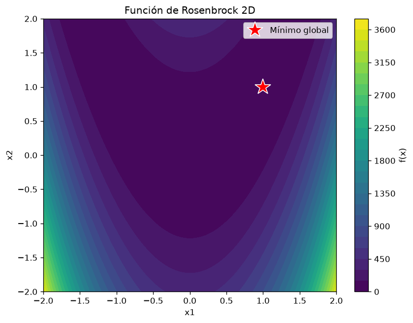
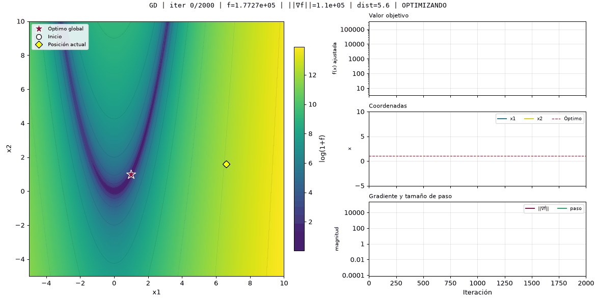
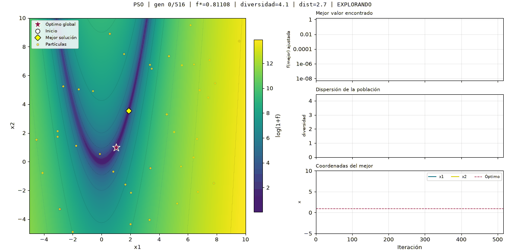

1. Introducción
La optimización es el proceso de encontrar los valores de entrada que minimizan o maximizan una función. En el contexto de las ciencias computacionales y la ingeniería, este problema aparece constantemente: desde ajustar los parámetros de un modelo de aprendizaje automático hasta encontrar la ruta más corta entre dos puntos. La dificultad de resolverlo depende de la geometría de la función objetivo, y en particular de dos factores: cuántos mínimos locales tiene y qué tan estrecho o mal condicionado es su valle principal.
En este trabajo se comparan dos familias de métodos de optimización sobre una función de prueba clásica: la función de Rosenbrock. Por un lado, un método de primer orden basado en el gradiente (descenso por gradiente); por el otro, tres metaheurísticas poblacionales: optimización por enjambre de partículas (PSO), evolución diferencial (DE) y un algoritmo evolutivo con codificación real (EA). El objetivo es analizar qué aporta cada familia en términos de calidad de la solución y costo computacional, medido en número de evaluaciones de la función y de su gradiente.
La elección de Rosenbrock no es casual. Esta función es uno de los benchmarks más utilizados en optimización numérica porque presenta una geometría especialmente difícil: posee un único mínimo global, pero está inmerso en un valle muy estrecho, curvo y mal condicionado. Esta propiedad hace que los métodos basados en gradiente avancen con mucha lentitud por el valle, mientras que las técnicas poblacionales —que no dependen del gradiente— pueden explorar el espacio de búsqueda de manera más efectiva. El contraste entre ambas familias se analiza en dos y tres dimensiones, con 30 corridas independientes por configuración.
El presente informe está organizado de la siguiente manera. La Sección 2 define formalmente la función de Rosenbrock y sus propiedades. La Sección 3 describe los cuatro métodos implementados. La Sección 4 introduce la regla de comparación justa entre métodos que usan y no usan gradiente. La Sección 5 presenta los resultados experimentales. La Sección 6 discute los hallazgos a la luz de la geometría de la función. Finalmente, la Sección 7 cierra con las conclusiones y se incluye la bibliografía consultada.
2. Fundamento matemático
2.1. Definición de la función
La función de Rosenbrock, también conocida como función banana por la forma característica de sus curvas de nivel, fue propuesta por Howard H. Rosenbrock en 1960 como un caso de prueba para evaluar el desempeño de algoritmos de optimización (Rosenbrock, 1960). En su forma general para $n$ dimensiones se define como:
Para el caso bidimensional, la expresión se reduce a:
2.2. Dominio y mínimo global
El dominio de búsqueda considerado en este trabajo es el rectángulo $[-5, 10]^n$, que corresponde al dominio estándar utilizado en la literatura de optimización para esta función (Surjanovic & Bingham, 2013; Nocedal & Wright, 2006). Este dominio contiene al mínimo global y es lo bastante amplio para reflejar el reto real de partir desde una condición inicial aleatoria potencialmente lejana del óptimo.
La función tiene un único mínimo global, ubicado en:
A pesar de tener un único mínimo global, Rosenbrock es considerada una función difícil porque el mínimo está inmerso en un valle muy estrecho, curvo y mal condicionado. En la Figura 1 se muestran las curvas de nivel de la función en 2D, donde se aprecia la forma de "banana" y la posición del mínimo global.
Figura 1
Curvas de nivel de la función de Rosenbrock en 2D

Nota. La estrella roja marca el mínimo global en (1, 1). Fuente: elaboración propia.
2.3. Gradiente
El gradiente de la función es necesario para el método de descenso por gradiente. Para cada componente $i$, la derivada parcial está dada por:
Este gradiente se implementó de forma analítica, evitando el uso de diferencias finitas, lo cual permite reducir el costo computacional de cada iteración del descenso por gradiente. En la Sección 4 se justifica la equivalencia entre evaluaciones del gradiente y evaluaciones de la función para efectos de comparación.
3. Metodología
Se implementaron cuatro métodos de optimización, todos partiendo de condiciones iniciales aleatorias dentro del dominio $[-5, 10]^n$ y deteniéndose al alcanzar un número máximo de iteraciones o al cumplir un criterio de convergencia. Los hiperparámetros utilizados son los definidos en la configuración estándar del proyecto, y se describen a continuación junto con las ecuaciones de actualización de cada método.
3.1. Descenso por gradiente (GD)
El descenso por gradiente es un método de primer orden que actualiza iterativamente la posición en dirección opuesta al gradiente de la función. La regla de actualización es:
donde $\alpha > 0$ es la tasa de aprendizaje y $\nabla f$ es el gradiente de la función en el punto actual. En este trabajo se utiliza $\alpha = 10^{-4}$ y una tolerancia de convergencia $\|\nabla f\| < 10^{-8}$. Este valor de $\alpha$ es muy pequeño, pero necesario para evitar la divergencia que se produce con valores mayores (como se documenta en la Sección 6.4). El gradiente se calcula de forma analítica, sin recurrir a diferencias finitas.
3.2. Optimización por enjambre de partículas (PSO)
PSO es una metaheurística inspirada en el comportamiento colectivo de bandadas de aves y cardúmenes. Cada partícula $i$ tiene una posición $x_i$ y una velocidad $v_i$, que se actualizan en cada iteración según:
donde $p_i$ es la mejor posición personal de la partícula $i$, $g$ es la mejor posición global del enjambre, $w$ es el peso de inercia y $c_1, c_2$ son los coeficientes cognitivo y social. Los valores usados son $w = 0.7$ y $c_1 = c_2 = 1.5$, con 40 partículas y un máximo de 2000 iteraciones. Las posiciones se recortan al dominio $[-5, 10]^n$ en cada paso para evitar que las partículas salgan del espacio de búsqueda.
3.3. Evolución diferencial (DE)
La evolución diferencial es una metaheurística poblacional que genera nuevos individuos combinando tres vectores aleatorios de la población. Para cada individuo $i$, se construye un vector mutante:
donde $x_a, x_b, x_c$ son tres individuos distintos entre sí y distintos del individuo $i$, y $F \in (0, 2]$ es el factor de mutación. Luego se aplica un cruce binomial con probabilidad $CR$:
Finalmente, el individuo prueba $y_i$ reemplaza al padre $x_i$ solo si tiene mejor valor de función objetivo. Se usaron los valores $F = 0.8$ y $CR = 0.9$, con una población de 40 individuos.
3.4. Algoritmo evolutivo (EA)
El algoritmo evolutivo de codificación real combina selección por torneo, cruce BLX-$\alpha$, mutación gaussiana y elitismo. En cada generación:
Selección por torneo: cada padre se elige tomando el mejor entre $k = 3$ individuos aleatorios de la población.
Cruce BLX-$\alpha$: dos padres $p_1$ y $p_2$ generan un hijo $h$ con cada componente muestreada uniformemente en un intervalo extendido:
donde $d_j = |p_{1,j} - p_{2,j}|$ y $\alpha = 0.5$.
Mutación gaussiana: cada componente del hijo se perturba con probabilidad $p_m = 0.1$ y una desviación que decrece con las generaciones:
Elitismo: los 2 mejores individuos pasan intactos a la siguiente generación, sin ser re-evaluados.
3.5. Protocolo experimental
Cada método se ejecutó en dos configuraciones: 2D y 3D. Para cada configuración se realizaron 30 corridas independientes con semillas fijas y documentadas (semilla base 42, corrida $i$ usa semilla $42 + i$). Se reportan las siguientes estadísticas:
- Media, mediana y desviación estándar del valor final $f(x^*)$.
- Mejor y peor valor alcanzado.
- Tasa de éxito: proporción de corridas con $f(x^*) \leq 10^{-3}$.
- Tasa de convergencia: proporción de corridas que cumplieron el criterio de parada antes del límite de iteraciones.
- Evaluaciones de $f$, evaluaciones de $\nabla f$ y costo equivalente (ver Sección 4).
Todos los experimentos se implementaron en Python con NumPy, y los
resultados son completamente reproducibles a partir del repositorio
Git del proyecto. La semilla base y los hiperparámetros están
especificados en el archivo configs/CLI_defaults_rosenbrock.json.
4. Comparación justa
Comparar métodos que usan gradiente con métodos que no lo usan no es directo: el gradiente es una operación más costosa que una simple evaluación de la función. Para que la comparación sea justa, se deben reportar por separado el número de evaluaciones de $f$ y el número de evaluaciones de $\nabla f$, y luego proponer una equivalencia entre ambas.
4.1. Conteo de evaluaciones
El conteo se implementó de la siguiente manera:
- Evaluaciones de $f$: cada vez que el algoritmo necesita evaluar la función objetivo. Para GD, las evaluaciones de $f$ que se realizan solo para guardar el historial gráfico no se cuentan, porque no forman parte del algoritmo en sí. Para PSO, DE y EA, cada evaluación de un individuo de la población sí se cuenta.
- Evaluaciones de $\nabla f$: cada vez que se llama al gradiente se incrementa un contador independiente. Solo el método de descenso por gradiente realiza estas llamadas; las metaheurísticas poblacionales nunca evalúan el gradiente.
4.2. Equivalencia propuesta
Para comparar los métodos en una misma escala, se propone la siguiente
equivalencia: una evaluación del gradiente analítico cuenta como
una evaluación de $f$. La justificación es que el
gradiente de Rosenbrock se implementó de forma cerrada en
problems.py (gradiente_rosenbrock), sin
recurrir a diferencias finitas. Por lo tanto, calcular el gradiente
cuesta aproximadamente lo mismo que evaluar la función una vez.
Por lo tanto, el costo equivalente de cada método se calcula como:
donde $n_f$ es el número de evaluaciones de $f$ y $n_{\nabla f}$ el número de evaluaciones del gradiente. Como referencia, si el gradiente se aproximara por diferencias centrales, cada evaluación costaría $2n$ evaluaciones de $f$ en dimensión $n$; ese no es el caso de este trabajo, porque el gradiente es analítico.
4.3. Ejemplo de aplicación
A modo de ejemplo, si el descenso por gradiente realizó 2000 iteraciones y evaluó el gradiente 2000 veces, su costo equivalente es:
En cambio, DE realizó 5092 evaluaciones de $f$ y ninguna del gradiente, por lo que su costo equivalente es 5092. Así, GD es más barato en evaluaciones, pero —como se verá en la Sección 5— no alcanza el óptimo. En la Sección 5 se presenta la tabla completa de costos equivalentes para todos los métodos y dimensiones.
5. Resultados
En esta sección se presentan los resultados de los cuatro métodos implementados, en dos y tres dimensiones, sobre la función de Rosenbrock. Se realizaron 30 corridas independientes por configuración, con semilla base 42. El umbral de éxito se definió como $f(x^*) \leq 10^{-3}$, un valor exigente que permite distinguir claramente entre métodos.
5.1. Resultados en 2D
La Tabla 1 resume las estadísticas de las 30 corridas en 2D para cada método.
| Método | Media | Desv. estándar | Mejor | Peor | Tasa éxito | Iter. medias | Evals eq. |
|---|---|---|---|---|---|---|---|
| GD | $4.89$ | $4.96$ | $4.97 \times 10^{-1}$ | $1.57 \times 10^{1}$ | 0 % | 2000 | 2000 |
| PSO | $2.22 \times 10^{-20}$ | $8.36 \times 10^{-20}$ | $0$ | $4.39 \times 10^{-19}$ | 100 % | 544 | 21813 |
| DE | $2.03 \times 10^{-14}$ | $1.90 \times 10^{-14}$ | $1.53 \times 10^{-15}$ | $6.47 \times 10^{-14}$ | 100 % | 126 | 5092 |
| EA | $4.44 \times 10^{-2}$ | $1.48 \times 10^{-1}$ | $3.48 \times 10^{-11}$ | $6.14 \times 10^{-1}$ | 57 % | 1627 | 61884 |
5.2. Resultados en 3D
La Tabla 2 muestra los resultados equivalentes en 3D. El problema es considerablemente más difícil en esta configuración, y esto se refleja en el desempeño de todos los métodos.
| Método | Media | Desv. estándar | Mejor | Peor | Tasa éxito | Iter. medias | Evals eq. |
|---|---|---|---|---|---|---|---|
| GD | $2.29$ | $2.65$ | $9.23 \times 10^{-3}$ | $1.02 \times 10^{1}$ | 0 % | 2000 | 2000 |
| PSO | $4.37 \times 10^{-11}$ | $7.84 \times 10^{-11}$ | $2.64 \times 10^{-16}$ | $3.58 \times 10^{-10}$ | 100 % | 2000 | 80040 |
| DE | $2.09 \times 10^{-13}$ | $1.48 \times 10^{-13}$ | $1.35 \times 10^{-14}$ | $5.63 \times 10^{-13}$ | 100 % | 219 | 8815 |
| EA | $8.23 \times 10^{-1}$ | $1.20$ | $3.95 \times 10^{-4}$ | $4.91$ | 3 % | 2000 | 76040 |
5.3. Costo equivalente
Aplicando la equivalencia propuesta en la Sección 4 ($1 \nabla f \equiv 1$ evaluación de $f$), se obtiene la Tabla 3.
| Método | Evals $f$ (2D) | Evals $\nabla f$ (2D) | Costo equiv. (2D) | Costo equiv. (3D) |
|---|---|---|---|---|
| GD | 0 | 2000 | $0 + 1 \times 2000 = 2000$ | $0 + 1 \times 2000 = 2000$ |
| PSO | 21813 | 0 | 21813 | 80040 |
| DE | 5092 | 0 | 5092 | 8815 |
| EA | 61884 | 0 | 61884 | 76040 |
5.4. Visualización del proceso de optimización
Las Figuras 2 y 3 muestran la evolución de GD y PSO en 2D. En cada figura se presenta, a la izquierda, la trayectoria sobre las curvas de nivel de Rosenbrock, y a la derecha tres paneles con la evolución del valor objetivo, las coordenadas y (cuando aplica) el gradiente o la diversidad de la población.


6. Discusión
Los resultados presentados en la Sección 5 permiten extraer varias conclusiones sobre el comportamiento de los métodos basados en gradiente y de las metaheurísticas poblacionales cuando se enfrentan a la función de Rosenbrock. A continuación se analizan los datos desde cuatro perspectivas: calidad de la solución, robustez, costo computacional y relación con la geometría de la función.
6.1. Desempeño del descenso por gradiente
El descenso por gradiente (GD) obtuvo los peores resultados en términos de calidad. En 2D, la media fue de $4.89$ con una tasa de éxito del 0 %; en 3D, la media fue de $2.29$ con la misma tasa de éxito del 0 %. Es decir, en ninguna de las 60 corridas totales (30 en 2D y 30 en 3D) el método logró alcanzar el umbral $f \leq 10^{-3}$. El mejor valor obtenido fue $0.497$ en 2D y $0.0092$ en 3D, ambos muy por encima del umbral.
La Figura 2 muestra visualmente lo que ocurre. El punto se desplaza lentamente hacia el valle, pero después de 2000 iteraciones apenas